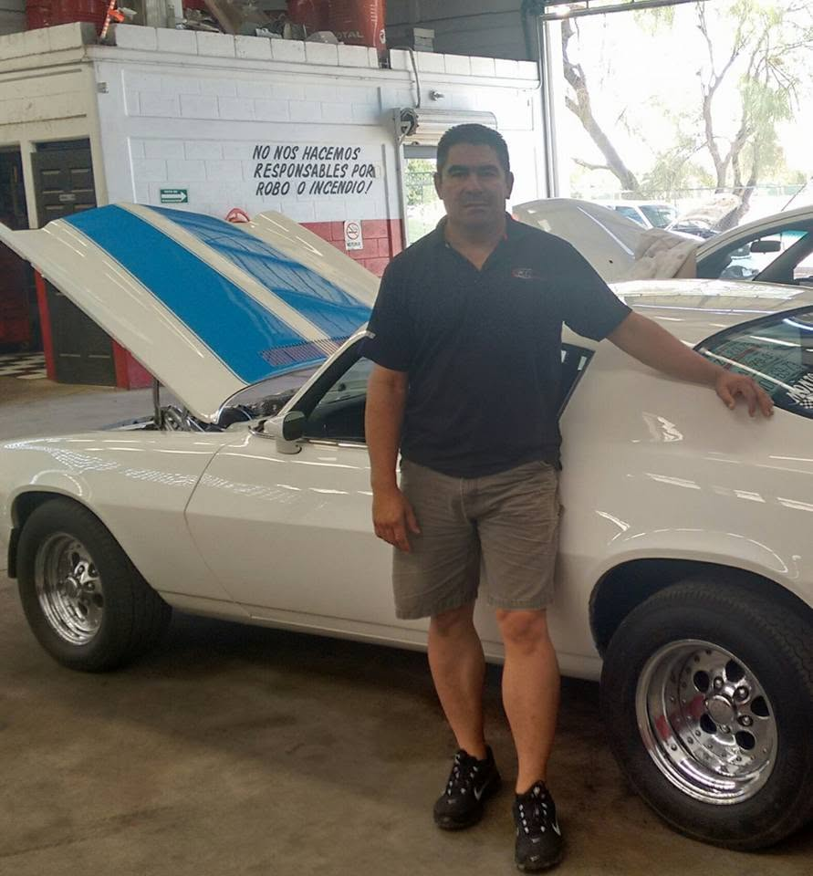
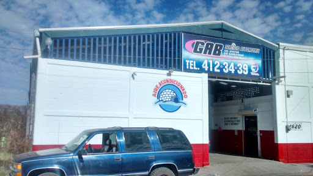

Taller mecánico en Ciudad Obregón desde 2005
El mantenimiento de tu carro, bien hecho.
Servicio menor, servicio mayor, afinación y frenos en Ciudad Obregón. Todo es por cotización: llámanos o escríbenos por WhatsApp.

Desde 2005 en Obregón
Todo por cotización
Llamadas y WhatsApp al mismo número
Limpieza, puntualidad y honestidad
Son las tres cosas que nunca cambian en GAB. Si no sabes mucho de carros, no tienes que adivinar: así trabajamos con cada cliente.
-
01
Llámanos o escríbenos
Cuéntanos qué necesita tu carro y te decimos cómo lo vemos.
-
02
Lo revisamos y te cotizamos
Antes de empezar cualquier trabajo sabes qué se va a hacer.
-
03
Nada extra sin tu aprobación
Si vemos algo más, te llamamos primero. Tú decides.
-
04
Te lo entregamos probado
Antes de entregarte el carro lo probamos, para que te lo lleves como debe.
Servicios
Nos dedicamos al mantenimiento y al servicio preventivo: cuidar tu carro antes de que falle. Trabajamos carros, camionetas, pickups y flotillas de las marcas comerciales.
Nuestro fuerte
Mantenimiento preventivo
El cuidado de rutina que hace que tu carro dure más y te evite sorpresas en el camino.
- Servicio menor
- Servicio mayor y afinación
- Cambio de aceite y filtros
- Revisión general
Frenos
Revisión y cambio de balatas como parte del mantenimiento de tu carro.
Diagnóstico con escáner
¿Se prendió una luz en el tablero? La revisamos y te decimos qué tiene.
¿Vas a comprar un usado?
Tráelo antes de pagar. Lo revisamos y te decimos con honestidad en qué estado está.
¿Tu carro necesita otra cosa? Llámanos. Te decimos con honestidad si lo podemos atender o a dónde te conviene llevarlo.
Llamar al tallerUn taller familiar
GAB lleva el nombre de la familia: G de Gómez y AB de Abril.
Abrió en 2005 en la colonia Prado del Tepeyac. Lo atiende Germán Gómez con un equipo de tres mecánicos, y muchos de sus clientes llegan por recomendación de su propia familia.
Germán empezó como mecánico en la Ford de Obregón. De ahí trae la costumbre de tener el taller ordenado y limpio, y de cumplir lo que se acuerda con cada cliente.
Antes del taller, la pista
Germán corría cuarto de milla con un Mustang 1974 al que le decían "El Forito". Él mismo lo preparaba. Una vez en Hermosillo se quedó sin frenos justo al cruzar la meta y logró controlarlo. De esa época le quedó algo que sigue usando: conocer cada carro por dentro.
Lo que siempre nos preguntan
¿Cuánto me va a costar?
Todo es por cotización, porque cada carro llega distinto. Llámanos o mándanos WhatsApp.
¿A qué hora va a quedar mi carro?
Depende del trabajo. Al revisarlo te decimos cuándo puedes pasar por él.
¿Atienden cualquier falla?
Nuestro fuerte es el mantenimiento. Para lo demás, llámanos y vemos juntos si te podemos atender.
¿Las refacciones son originales?
Trabajamos con originales y con genéricas de calidad. Te explicamos la diferencia y tú decides.
¿Cómo puedo pagar? ¿Dan factura?
Efectivo, transferencia y tarjeta de débito o crédito. Sí damos factura.
Visítanos
Dirección
Bahía de Lobos 1620, Col. Prado del Tepeyac, C.P. 85150, Ciudad Obregón, Sonora.
Frente al Modelo Deportivo.
Horario
